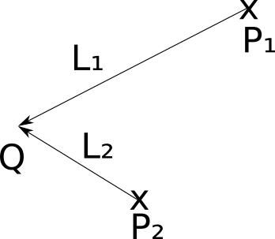

1. Işık Nedir ve Neden Önemli?
Önceki bölümde küreleri çizdiğimizde, bu küreler düz renkli daireler gibi görünüyordu. Bu durumun nedeni, sahnede herhangi bir ışık modelinin olmamasıydı. Gerçek dünyada nesnelerin üç boyutlu görünmesini sağlayan şey ışıktır. Işık, gölge ve yansıma olmadan nesneler düz ve cansız görünür.
Günlük yaşamda, etrafımızdaki her şeyi ışık sayesinde farklı şekillerde ve derinlikte algılarız. Işık, bir nesnenin yüzeyine çarptığında, yüzeyin özelliklerine bağlı olarak ya emilir, ya yansıtılır ya da saçılır. Bu etkileşimler sayesinde bir nesnenin dokusu, şekli ve derinliği hakkında bilgi sahibi oluruz.
Işık olmadan, bir sahnedeki nesneler birbirinden ayırt edilemez hale gelir ve sadece düz renkler olarak görünürler. Bu nedenle, gerçekçi bir sahne oluşturmak için etkili bir ışık modeli kullanmak kritiktir.
2. Basitleştirici Varsayımlar
- Tüm ışıklar beyaz olsun: Yani sadece bir yoğunluk değeri \( i \) kullanıyoruz. Gerçek dünyada, ışık renkli olabilir ve her renk kanalı (kırmızı, yeşil, mavi) için ayrı hesaplamalar yapılması gerekebilir. Ancak, işimizi basit tutmak için şu an sadece beyaz ışık kullanıyoruz.
- Atmosferi yok sayıyoruz: Gerçekte, uzaktaki ışıklar atmosferdeki parçacıklar nedeniyle daha soluk görünür. Biz bu etkiyi göz ardı ediyoruz. Bu, hesaplamaları basitleştirmek için yapılan bir varsayımdır.
Bu varsayımlar, başlangıçta ışık hesaplamalarını anlamayı ve uygulamayı kolaylaştırır. Daha karmaşık modeller ve simülasyonlar için bu faktörler ilerleyen aşamalarda dikkate alınabilir.
3. Noktasal Işık Kaynakları (Point Lights)
Noktasal ışık kaynakları, sabit bir noktadan her yöne eşit miktarda ışık yayan kaynaklardır. Bu tür bir ışık kaynağı, bir ampul gibi düşünülebilir. Noktasal ışık kaynakları, konum (position) ve yoğunluk (intensity) ile tanımlanır.
Her yüzey noktası için farklı bir ışık vektörü hesaplanır. Bu vektör, ışık kaynağının konumu \( Q \) ile yüzey noktası \( P \) arasındaki fark olarak tanımlanır:
Bu vektör, ışığın hangi yönden geldiğini ifade eder ve her nokta için farklı bir yönü belirtir.

4. Yönlü Işık Kaynakları (Directional Lights)
Yönlü ışık kaynakları, sonsuz bir uzaklıktan gelen ve sabit bir yöne sahip olan ışıklardır. Bu tür bir ışık kaynağı, güneş gibi düşünülebilir. Güneş, Dünya ölçeğinde çok uzakta olduğu için ışınları neredeyse paralel olarak kabul edilir.
Yönlü ışık kaynakları, yön (direction) ve yoğunluk (intensity) ile tanımlanır ve bir konuma sahip değildir. Tüm yüzey noktaları için aynı ışık vektörü \( \vec{L} \) kullanılır.

5. Ortam Işığı (Ambient Light)
Gerçekte, ışık bir nesneye çarptığında, bir kısmı emilirken geri kalanı sahneye saçılır. Bu saçılan ışık, başka nesnelere çarpar ve tekrar saçılır. Bu fenomen, global illumination olarak bilinir ve tamamen simüle etmek oldukça karmaşıktır.
Bu karmaşıklığı basitleştirmek için, sahneye sabit bir miktar ışık eklemek amacıyla ortam ışığı (ambient light) kullanılır. Ortam ışığı, sahnenin her noktasına eşit miktarda ışık ekler ve yalnızca bir yoğunluk değeri ile tanımlanır. Konum veya yönü yoktur.
Genellikle, bir sahnede yalnızca bir ambient ışık yeterlidir. Örneğin, bir sahnede ambient ışık 0.2, noktasal ışık 0.6 ve yönlü ışık 0.2 olduğunda toplamda 1.0 yoğunluğunda bir ışık elde ederiz.
6. Işık Türleri Özet Tablosu
| Tür | Konum | Yön | Kullanım Alanı |
|---|---|---|---|
| Noktasal Işık | Var | Her yöne | Ampuller, lambalar |
| Yönlü Işık | Yok | Sabit | Güneş ışığı |
| Ortam Işığı | Yok | Yok | Her sahneye genel ışık |
7. Ekstra Bilgiler
- Işık yoğunluğu (intensity): Işığın ne kadar parlak olduğunu belirten bir değerdir ve genellikle 0 ile 1 arasında bir değer alır. 0, hiç ışık yokken 1, maksimum parlaklığı temsil eder.
- Neden yoğunluklar toplamı 1.0? Toplam yoğunluğun 1.0 olması, aşırı parlaklık (overexposure) sorununu önlemek içindir. Böylece sahne aşırı parlak olmaz ve detaylar korunur.
- Global illumination: Işığın sahnede çok sayıda kez yansıması ve saçılmasıyla oluşan karmaşık aydınlatma modeli. Gerçekçi görsel efektler için önemlidir ancak hesaplaması zordur.
- Kodda bir noktasal ışık kaynağı ekleyin ve yoğunluğunu 0.5 olarak ayarlayın. Farklı konumlara taşıyın ve sahnedeki etkisini gözlemleyin.
- Yönlü ışığın yönünü değiştirin ve sahnedeki gölgelerin nasıl değiştiğini inceleyin.
- Ortam ışığını 0.1'e düşürün ve sahnenin genel parlaklığının nasıl değiştiğini gözlemleyin.